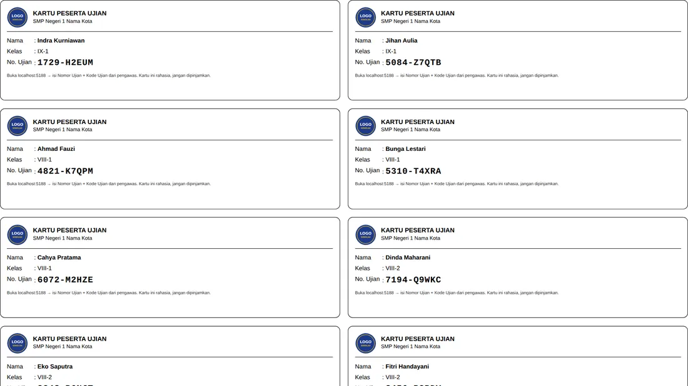

Siswa masuk dengan kartu peserta
Tempel daftar siswa dari Excel, klik satu tombol, dan setiap siswa mendapat nomor ujian. Cetak kartunya, bagikan. Saat ujian siswa cukup mengetik nomor ujian dan kode dari papan tulis; nama dan kelas terisi sendiri.
- Impor
- salin-tempel dari Excel: Nama, Kelas per baris
- Kartu
- nama, kelas, nomor ujian, logo sekolah
- Sekali kerja
- satu nomor hanya bisa mengirim satu kali per ujian